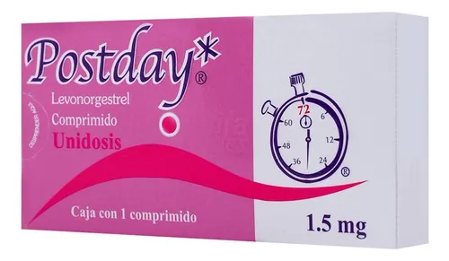
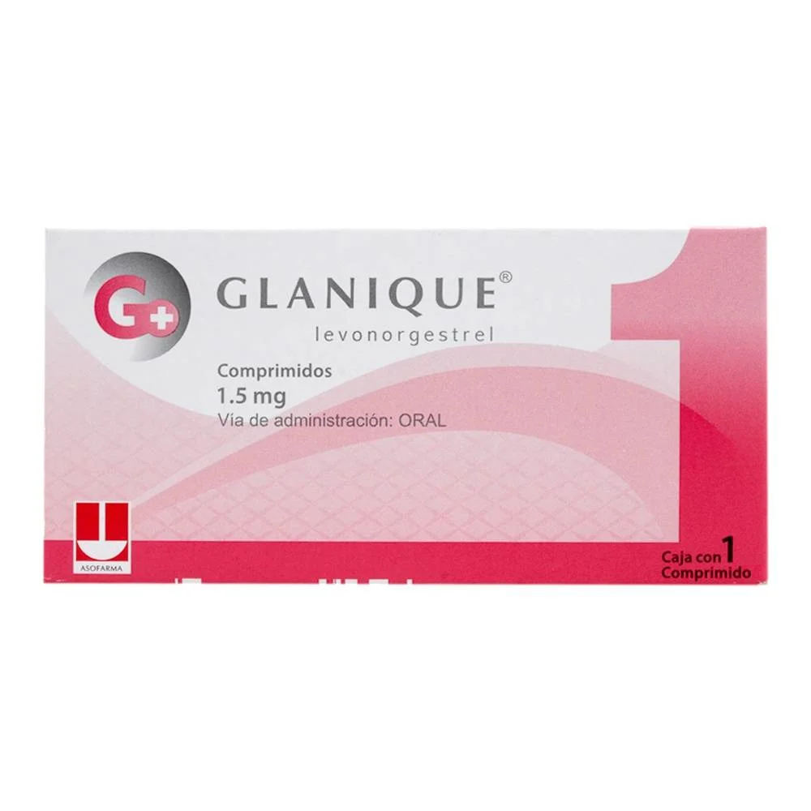

Levonorgestrel (LNG) Inhibe o retrasa la ovulación si se administra antes del pico de LH. También puede espesar el moco cervical, dificultando el paso de los espermatozoides. No interfiere con un embarazo ya implantado.
Anticoncepción de emergencia tras coito sin protección o fallo del método (preservativo roto, olvido de píldora, etc.).
Hipersensibilidad al principio activo- Embarazo confirmado- Hemorragia vaginal sin diagnosticar- Enfermedad hepática grave
Dosis única de 1.5 mg VO, idealmente dentro de las primeras 12-24 h post coito (eficacia hasta 72 h)- Alternativamente: 0.75 mg VO cada 12 h, 2 dosis. Si se vomita antes de 3 h tras la toma, repetir la dosis.
Náusea, vómito, cefalea, mareo, fatiga, dolor abdominal, sensibilidad mamaria, sangrado intermenstrual, adelanto o retraso menstrual.
Disminuye su eficacia con inductores enzimáticos como:- Rifampicina- Fenitoína- Carbamazepina- Griseofulvina- Hierba de San Juan